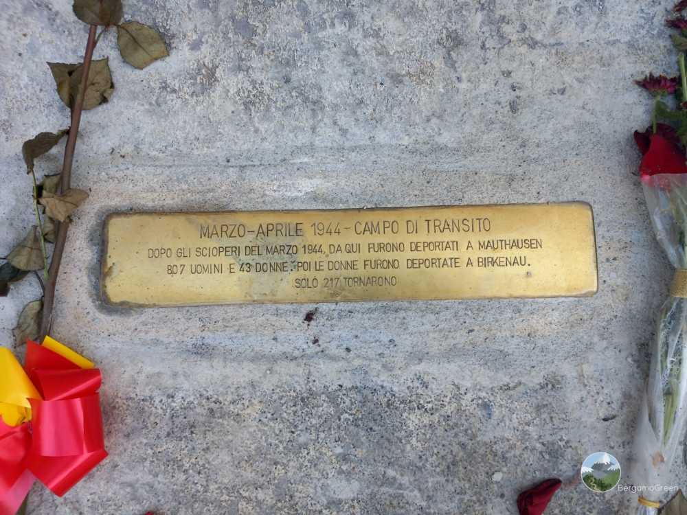

Historical Context
Occupied by the Germans upon their entry into Bergamo, the barracks that had belonged to the 78th Infantry Regiment (quartered here since 1921) was identified by Italy as a possible transit camp. The choice then fell on Fossoli, but from early March to April 1944 it actually functioned as a transit camp for 850 prisoners (including 43 women) to be deported to Germany. The majority of prisoners were arrested during the strikes of March 1944. They left with two trains from the city station, on March 17 and April 5, bound for Mauthausen, from where the women were then transferred to Birkenau.
During their stay in Bergamo, the arrestees were kept in the dormitories on the first floor of the barracks overlooking vicolo San Giovanni. Into that alley came, alone or in groups, their relatives (especially women), hoping to make contact with them. From those large windows, the prisoners threw small notes, farewell and affectionate messages, which were often picked up by passersby and sent to their families.
On March 17, the men and women destined to leave were lined up to walk to the station: some passersby showed them support, others mocked them. On April 5, the German authorities decided to transfer the detainees to the station by bus to avoid unrest.
Why it is a Place of Memory
The Montelungo Barracks is a fundamental place of memory because it materializes the mechanism of political repression and the passage from civil struggle to the tragedy of deportation. Symbolically, it connects the collective choices of resistance – such as the strikes of March 1944 – to the machinery of arrest and subsequent deportation to the camps.
Many of the prisoners who passed through here were then transferred to the Grumellina Sorting Camp. Remembering this place means recognizing that institutional violence often started from ordinary buildings in the heart of cities. Today, in an era where democratic rights should not be taken for granted, this site compels us to remember the price of freedom and the courage of those who, even in the face of the threat of deportation, maintained their dignity.
Grumellina Sorting Camp
During World War II, at Grumellina (Grumello al Piano), Prisoner of War Camp No. 62 was established for prisoners of war and military internees.
Thousands of men of various nationalities lived here in difficult conditions. Today it is a place of memory that recalls the suffering of the prisoners and the stories of solidarity from the local population.
Multimedia Content



Bibliographic Sources
- Streikertransport; Political Deportation in the Industrial Area of Sesto San Giovanni (Giuseppe Valota, 2007)
- La resistenza in Italia (Santo Peli, 2004) - The Resistance in Italy
- Itinerari di memoria (Mario Pelliccioli, 2023) - Memory Itineraries
Web Sources
- Image 1: ISREC BG
- Image 2: Gruppo Vitali
- ISREC BG: memoria urbana